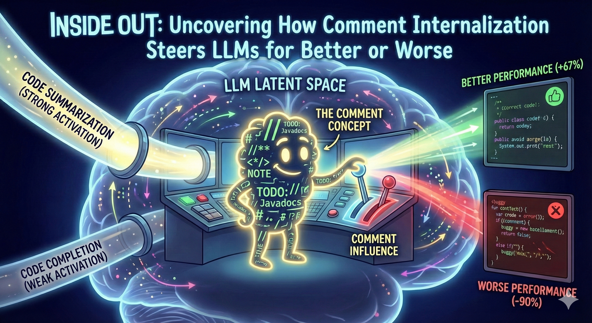
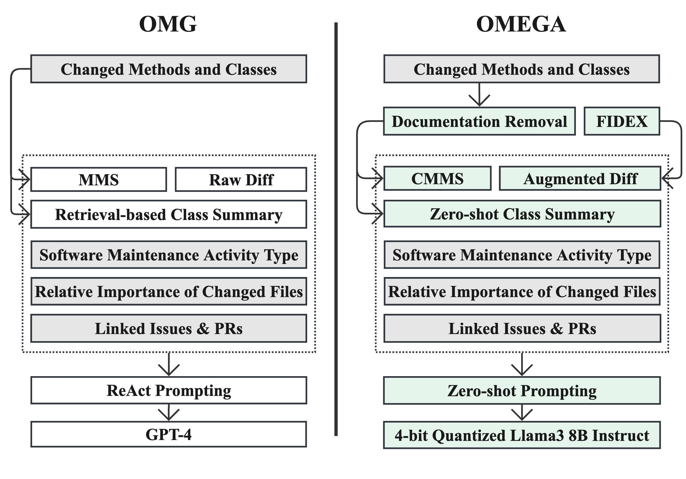
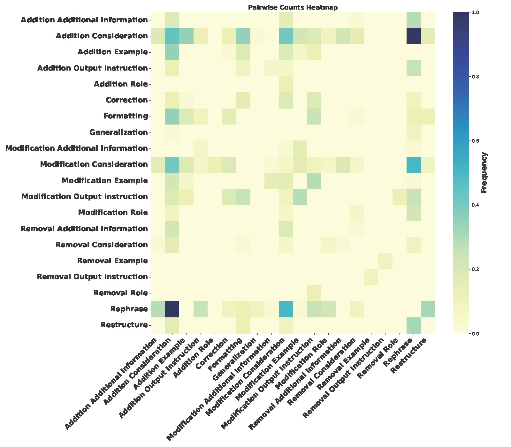
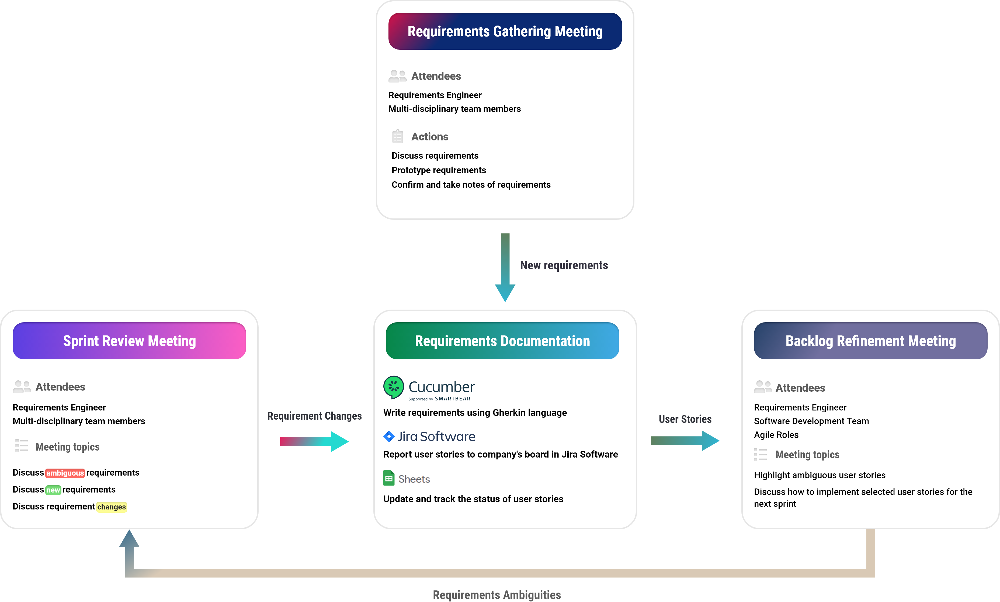

Hey! I’m a Ph.D. Candidate in Software Engineering at UC Irvine 🇺🇸, where I work with Prof. Iftekhar Ahmed in the STAIRS Lab. My research dives into understanding the underlying mechanisms of Large Language Models for code intelligence through the lens of mechanistic interpretability 🤖💭. Prior to this, I completed my Master’s in Software Engineering at the University of Calgary 🇨🇦.
Curious about what I’ve been working on? Feel free to check out my CV and my peer-reviewed publications below.

ICSE
ICSE
MSR
SMCPowered by Jekyll and Minimal Light theme.